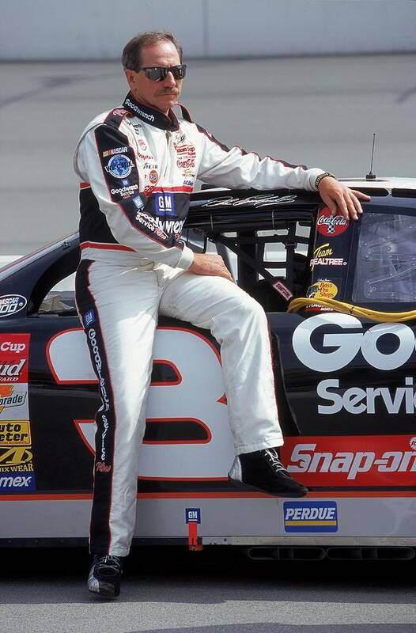
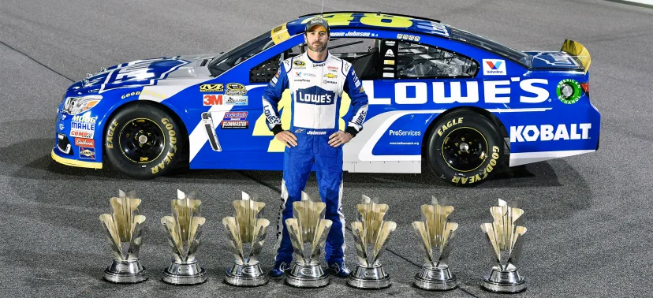
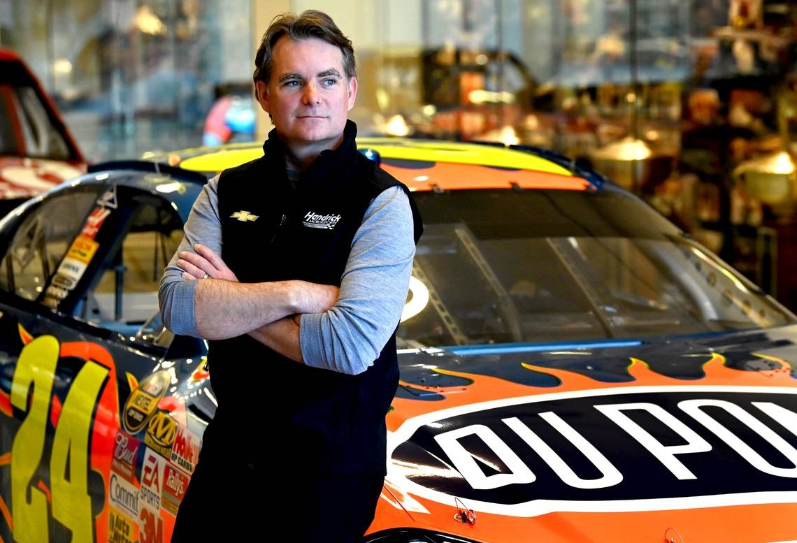

Sobre a NASCAR
A NASCAR (National Association for Stock Car Auto Racing) é a principal categoria de corridas de stock car nos Estados Unidos, famosa por suas emocionantes disputas em circuitos ovais.

A NASCAR (National Association for Stock Car Auto Racing) é a principal categoria de corridas de stock car nos Estados Unidos, famosa por suas emocionantes disputas em circuitos ovais.

7x Campeão da Nascar Cup Series

7x Campeão da Nascar Cup Series

4x Campeão da Nascar Cup Series